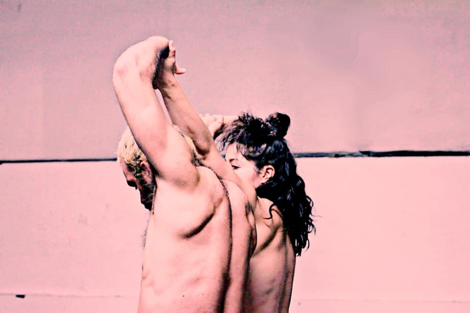
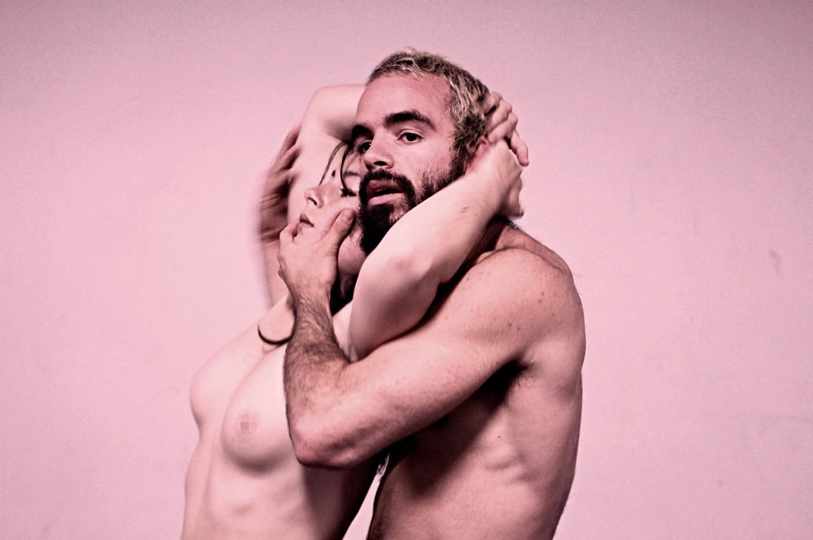
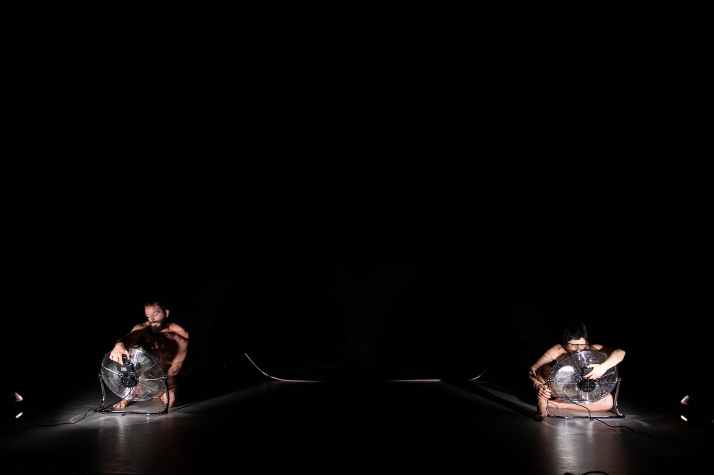
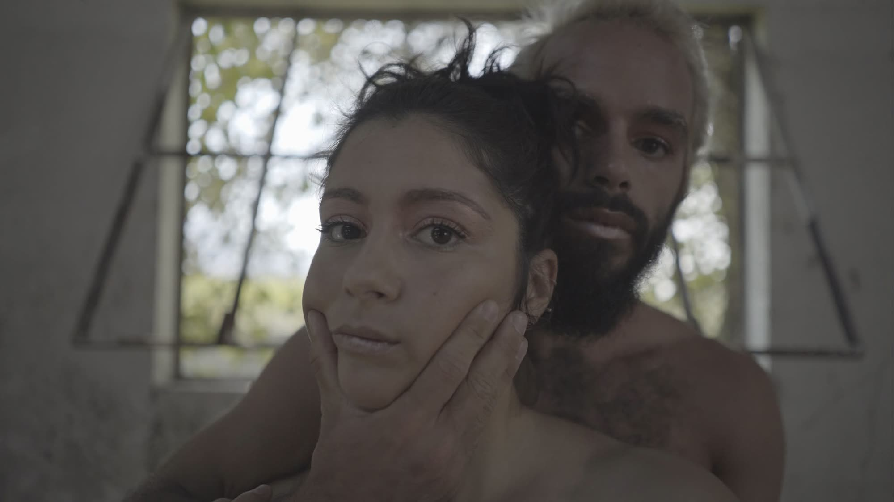
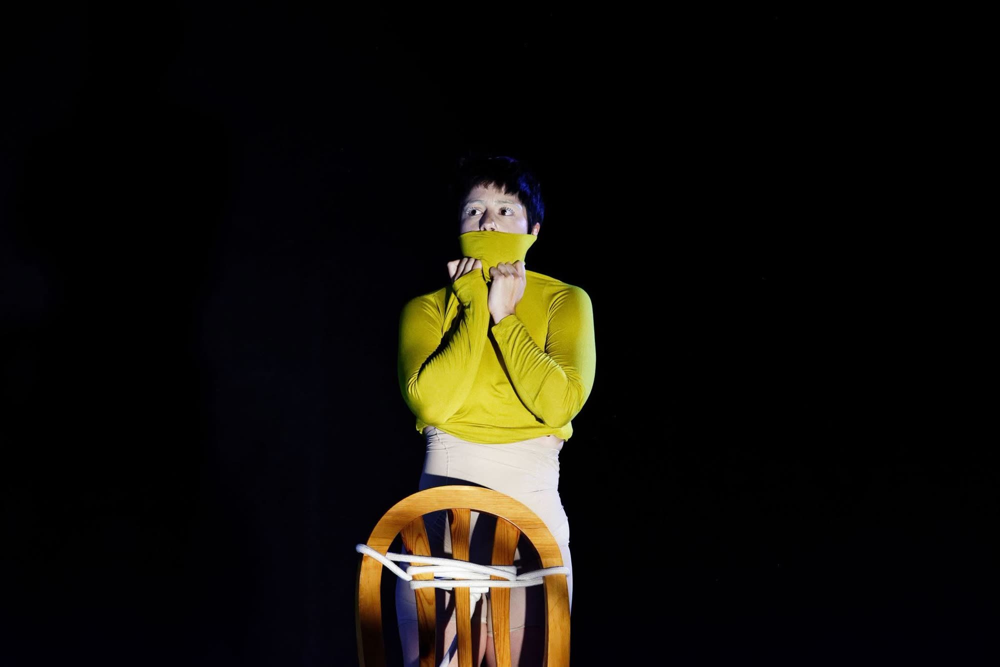
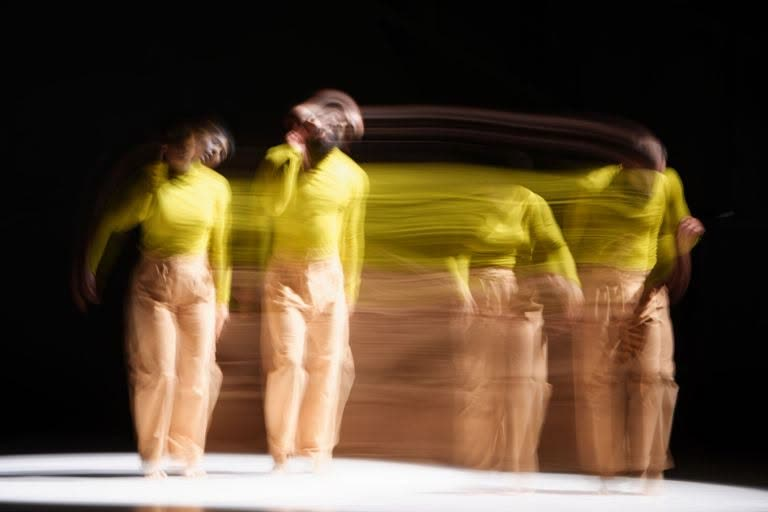

© Natacha Campos, Georgius Portugalus, João Octávio Peixoto, Afonso Barros & Florian Astraudo
“The search for a line that finds us, an absence that once felt like tenderness and today remains as the distorted trace of memory.”
In the Absence of Tenderness stems from a need to physically and “performatively” materialise the idea that two lives — two completely unrelated beings — can share identical moments and experiences, offering them a more intuitive, less obvious perception and understanding of one another, given the antipodal connections they share.
Creation and Performance - Juliana Fernandes and Victor Gomes
Sound Editing - Victor Gomes
Lighting Design - Élio Moreira
Photography - Natacha Campos, Georgius Portugalus, João Octávio Peixoto, Afonso Barros and Florian Astraudo
Video - Afonso Barros and Joany Uranka
Residency Support - Performact, Arte em Movimento, CDV - Teatro Noroeste, Instável Centro Coreográfico
Co-production - Instável Centro Coreográfico and Teatro Municipal do Porto – Instável 2ª Casa
Trailer - vimeo.com/359047524
12th February 2022 | Palcos Instáveis – Teatro Municipal do Porto
14th April 2022 | Palcos Instáveis 2ª Casa – Teatro Aveirense
23rd July 2022 | DO Festival – Gdańsk, Poland
September 2022 | Festival Quinzena de Almada
24th November 2023 | Teatro-Cine Torres Vedras
29th November 2023 | Theatro Circo Braga






© Natacha Campos, Georgius Portugalus, João Octávio Peixoto, Afonso Barros & Florian Astraudo